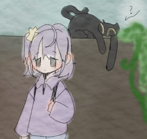
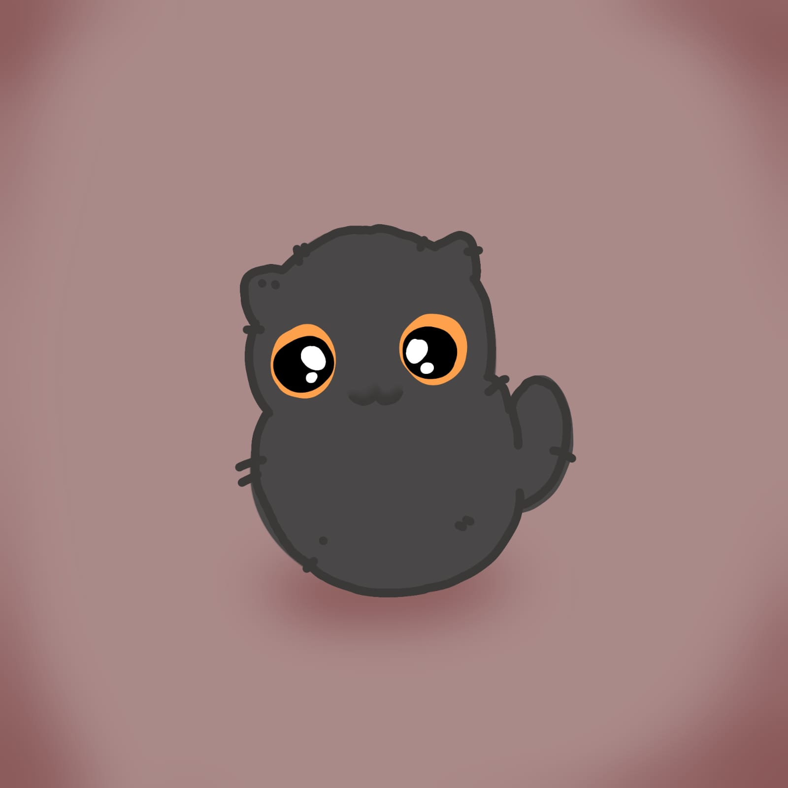
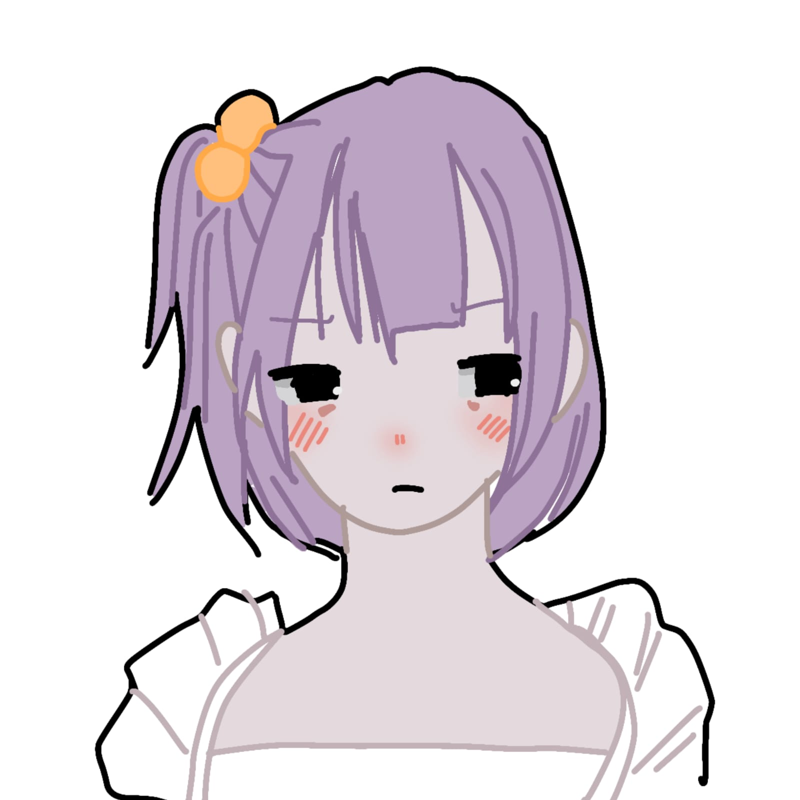
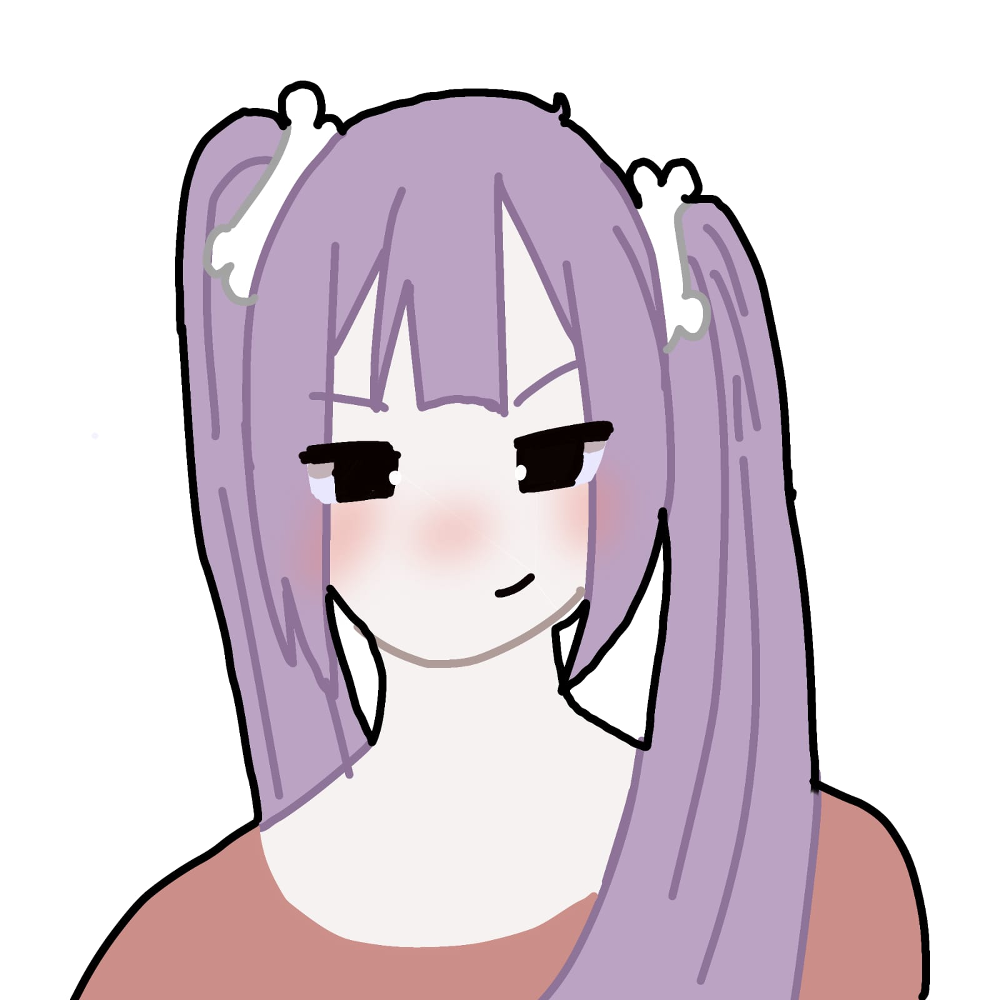

O mundo todo aplaude aqueles que se mantém irreversíveis diante da maior das catástrofes. Mas será que isso não tira um pouquinho do gosto de ser humano?

我喜欢猫，因为它们很可爱。猫喜欢睡觉，也喜欢玩球。它们有不同的颜色，比如白色、黑色和橙色。猫喜欢在阳光下睡觉。有些猫喜欢爬树。( ˃`⩌´˂ )

Em um mundo solitário, seja sua própria companhia.
猫是一种很可爱的动物。它们喜欢睡觉、玩耍和吃鱼。猫有两只耳朵、四条腿和一条尾巴。 有些猫喜欢和人一起玩，有些猫喜欢一个人待着。猫的眼睛很漂亮，晚上也能看得很清楚。 很多人喜欢养猫，因为猫很有趣，也很可爱。

Sua dor vai acabar.

Alice sempre viveu com muito, muito medo. Um medo terrível, que se esgueira pelas frestas da porta quando você mal sabe o que está acontecendo ao seu redor. Na adolescência, pouco mudou para a percepção dos mais velhos o seu diagnóstico de ansiedade social - o sofrimento, intenso e doloroso, nunca foi algo a se admitir ou proteger. Vinte voltas em torno do Sol mal mudaram a sua perspectiva de um mundo cinzento, mas de vez em quando rios de cor e luz entravam na sua vida com a presença de sua irmã mais nova Helena. Quando Helena, sua razão de viver, desaparece, Alice embarca numa jornada de aprendizado e autoconhecimento para trazê-la de volta para casa em segurança. É imprescindível que Alice aprenda lições valiosas no caminho para a liberdade e bem-estar de Helena.
Este projeto foi desenvolvido para fins de obtenção de nota para a disciplina de Projeto e Engenharia de Software.
Utilizando ferramentas como C#, Unity, e unindo o design e a contação de histórias à programação, buscamos trazer uma reflexão singela sobre medo, amizade e devoção.
Às integrantes, Gabrielly, Thaís e Mariana, por sua colaboração imprescindível para o andamento do projeto apesar dos desafios, que enfrentaremos sempre juntas!
A.D.A., © nov 2026
Una Contagem 2026.2 - 2° período Ciência da Computação
made with HTML, CSS and lots of love <3